Guia completo pra jogar, montar decks e usar o Simulador — versão 1.0, feito com capturas de tela reais do site em produção.
O Portal Gundam TCG BR é um ecossistema em português pra jogar, estudar e organizar o Gundam Card Game. Ele reúne quatro áreas principais:
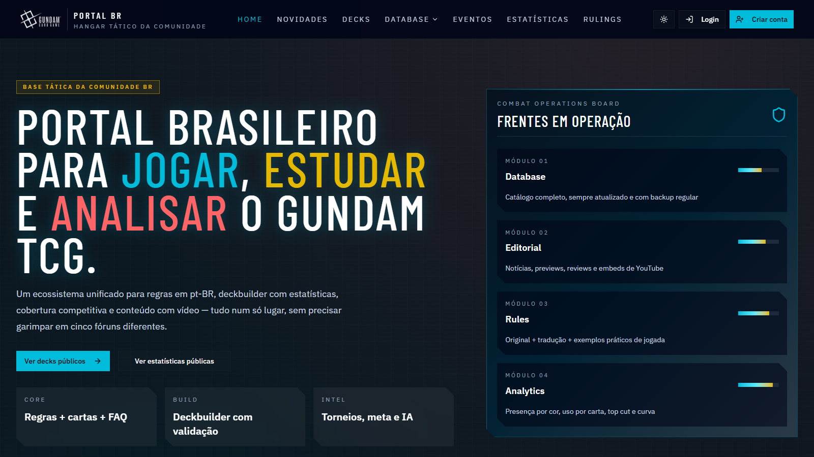
No canto superior direito de qualquer página pública, clique em Criar conta. A tela de login/cadastro é pública — o painel privado (dashboard) só existe depois que você entra.
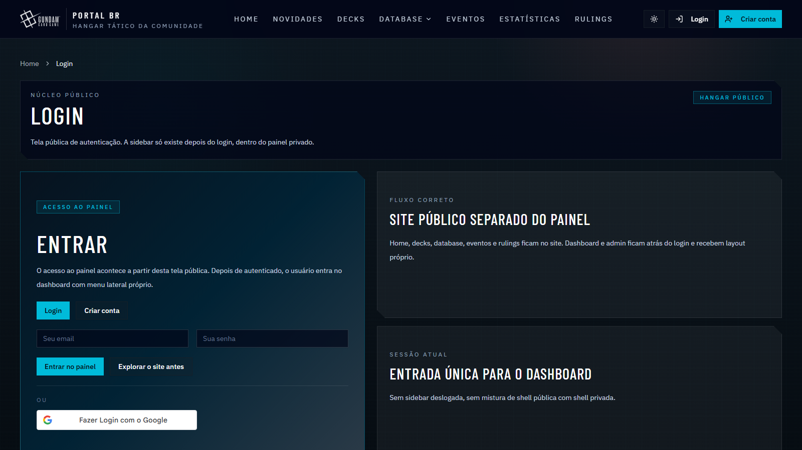
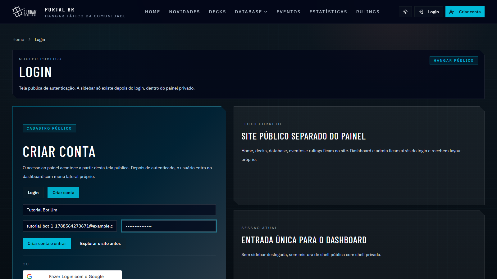
Depois de clicar em Criar conta e entrar, você já cai direto na sua Área privada:
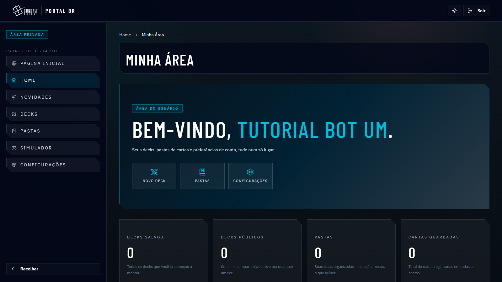
Você também pode entrar com sua conta Google direto na tela de login, se preferir não usar senha.
O menu Database (ou Decks → Ver Database) abre o catálogo público — funciona mesmo sem estar logado. Você pode buscar por nome, código, série ou trait, e filtrar por cor, tipo, keyword, raridade e coleção. Os filtros ficam salvos no link, então dá pra compartilhar uma busca pronta com qualquer pessoa.
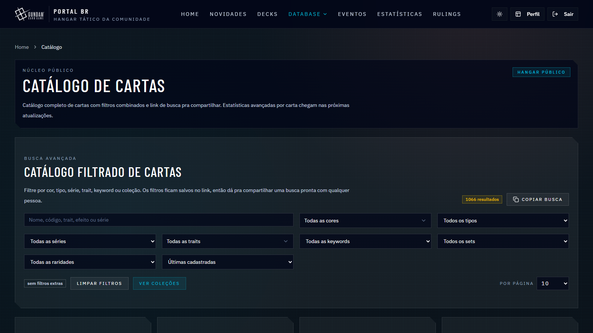
Clicar em qualquer carta abre o detalhe completo: arte, texto de efeito, estatísticas e rulings relacionadas.
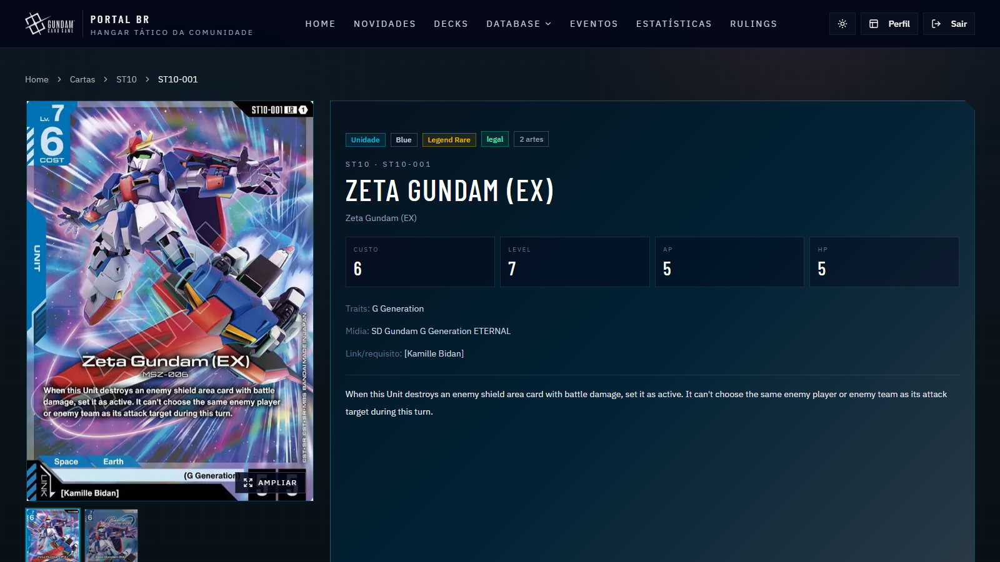
Com a conta logada, acesse Decks no menu lateral. Você vê a lista dos seus decks e o botão Novo deck.
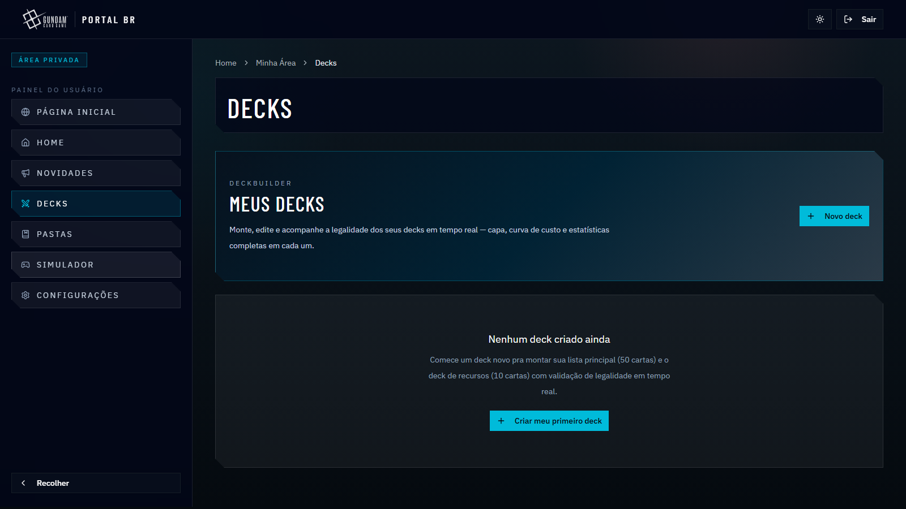
O editor de deck mostra a pool de cartas à esquerda/centro (com busca e filtros por cor/tipo/série/trait) e o deck em montagem à direita, já com a validação oficial em tempo real (50+10 cartas, limite de 2 cores, até 4 cópias por carta, mais o Deck de Recursos separado e EX Base/EX Resource inclusos automaticamente).
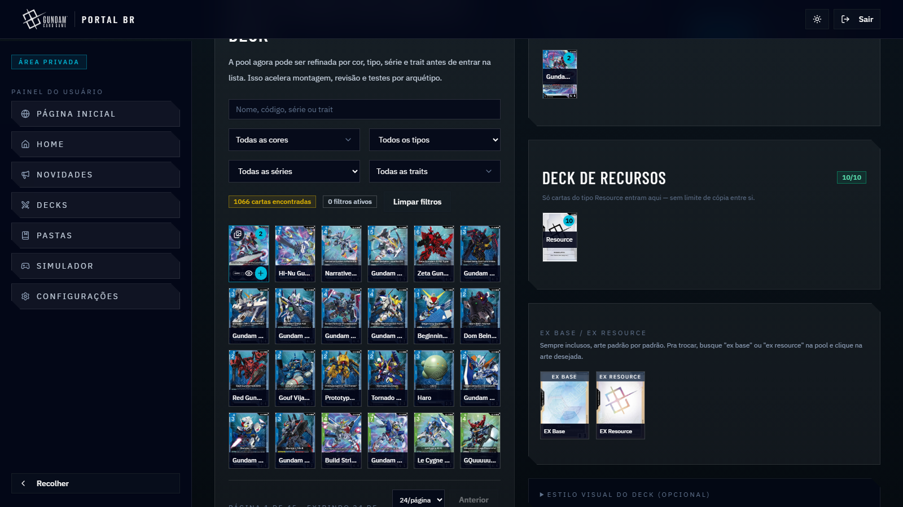
Em Pastas você organiza sua coleção física ou digital em "binders" — crie quantas pastas quiser (por coleção, por trade, por deck etc.) e adicione cartas a cada uma.
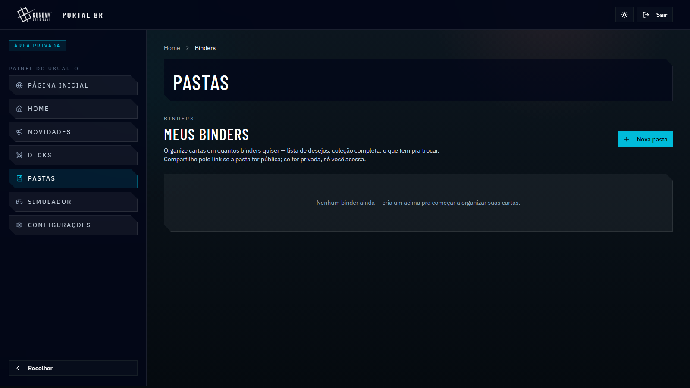
O Simulador é uma partida completa de Gundam Card Game, jogada em tempo real contra outra pessoa, com o motor de regras rodando no servidor (nada de "combinar por fora" quem ganhou uma disputa). Na versão 1.0 os decks disponíveis são os dois starter decks oficiais, ST01 e ST02 — qualquer combinação entre os dois jogadores é válida, inclusive os dois lados com o mesmo deck.
Acesse Simulador no menu, escolha seu deck (ST01 ou ST02) e clique em Entrar na fila. Você é pareado automaticamente com o próximo jogador que entrar — sem escolher adversário nem assento.
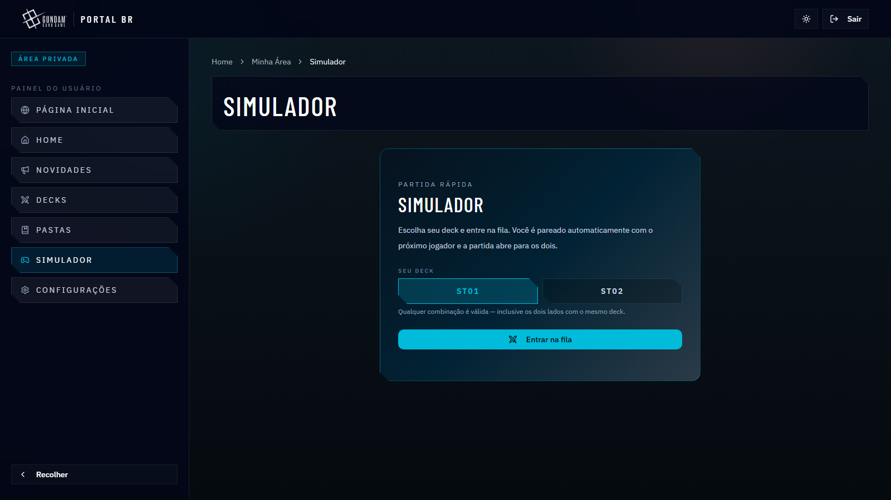
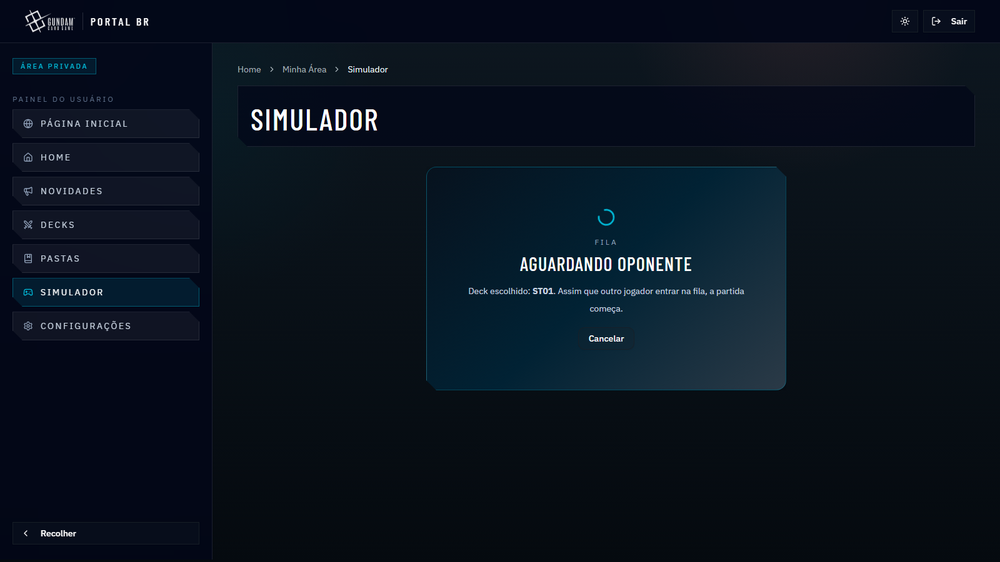
Assim que outro jogador entra na fila, a partida abre pros dois automaticamente.
A partida começa revelando quem joga primeiro (sorteado). Em seguida, cada jogador vê sua mão inicial de 5 cartas e decide, de forma independente: ficar com essa mão ou trocá-la por 5 novas (mulligan — só uma vez).
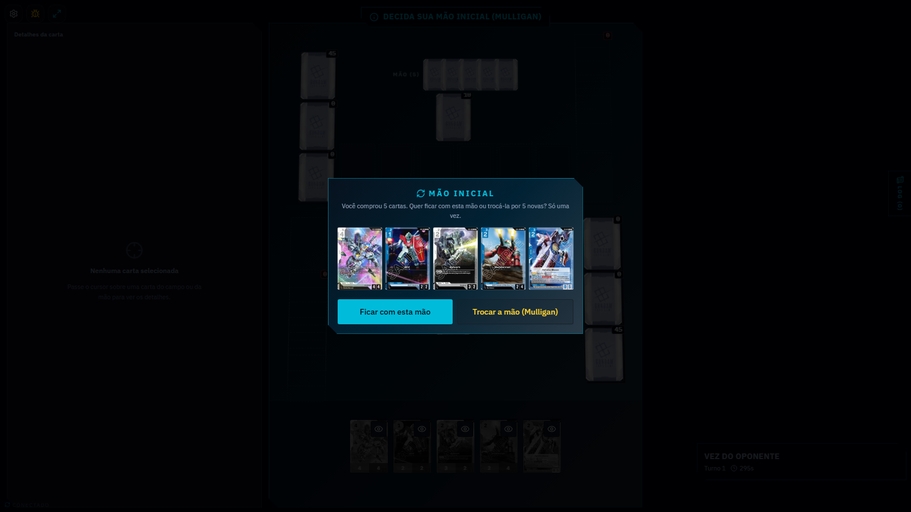
Depois do mulligan você já está na Fase Principal do turno 1. O tabuleiro mostra, de cima pra baixo: o campo do oponente (espelhado), a linha de combate central e o seu próprio campo — com Base, Shields, Deck, Trash, Exílio, Recursos e Battle Area sempre nas mesmas posições dos dois lados. Sua mão fica ancorada na base da tela.
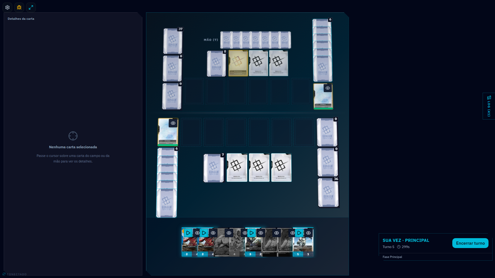
Em telas largas (widescreen), passar o mouse sobre qualquer carta do campo ou da mão abre o inspetor lateral, com a arte ampliada e todas as informações (nível, custo, AP/HP, traits, keywords e buffs ativos no momento).
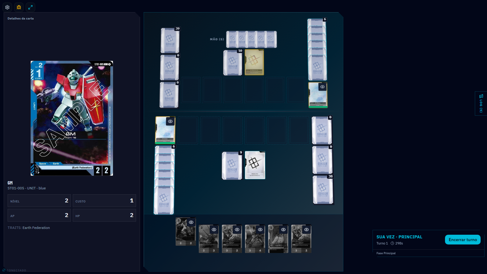
Clique no ícone ▶ "Jogar" no canto da carta. Se ela tiver custo em recursos, o jogo abre o modo de pagamento: clique exatamente na quantidade de recursos ativos pedida (o próprio jogo mostra o progresso, tipo "0/2 recursos") e depois em Confirmar.
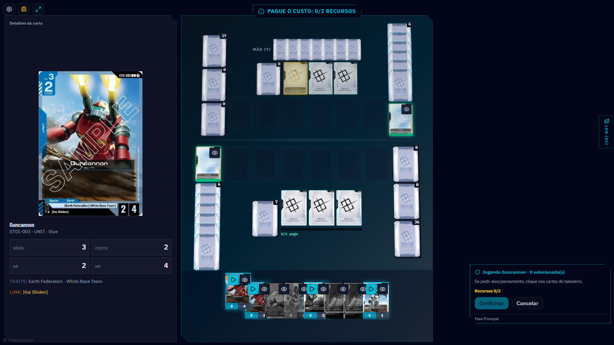
Toda ação de campo (Atacar, Ativar habilidade, Blocker, Mirar) aparece como um botão no canto superior direito da própria carta — sempre ao lado do ícone "Ver" (olho), que abre o zoom da carta a qualquer momento.
O painel Ação atual (canto inferior direito no desktop, coluna à esquerda no celular) sempre mostra o que fazer agora — sua vez, um custo pendente, um ataque em andamento, hora de bloquear etc. — com o botão certo pra cada situação (Encerrar turno, Confirmar/Cancelar, Atacar o jogador, Não bloquear...).
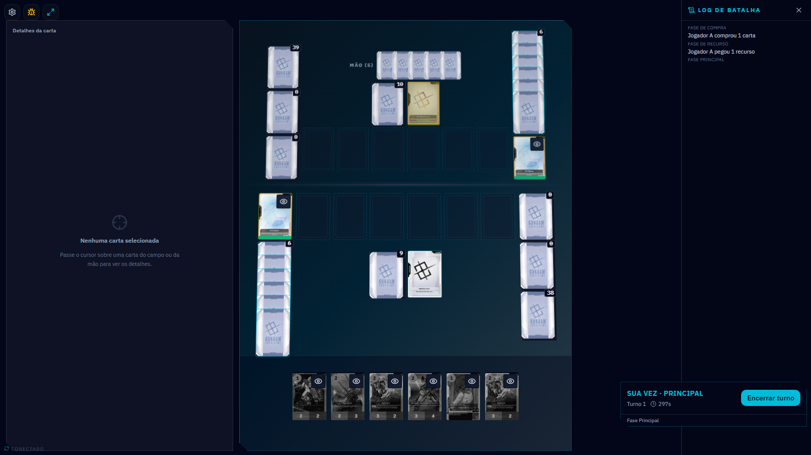
O ícone de engrenagem (canto superior esquerdo) abre o menu de configurações da partida: ligar o auto-pass do Passo de Ação, e o botão Desistir da partida — que encerra o duelo na hora e concede a vitória ao oponente (pede confirmação antes).
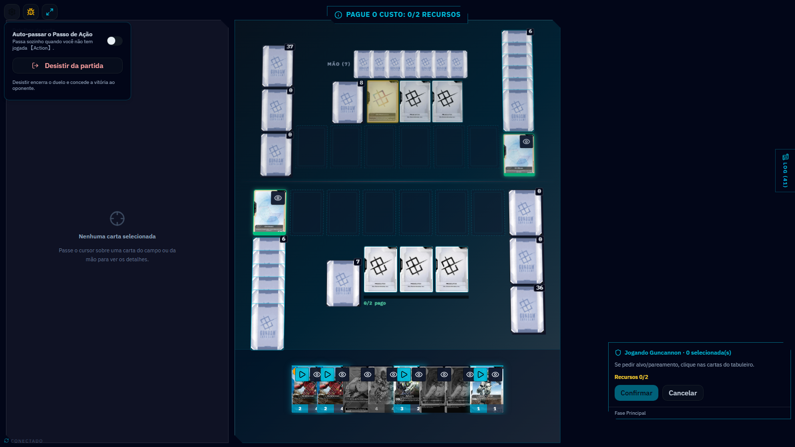
Quando a partida termina (por dano, deck-out ou desistência), os dois jogadores veem uma tela de resultado com o motivo — e são levados de volta ao site automaticamente depois de alguns segundos.
O Simulador funciona no navegador do celular — em modo paisagem (o app pede pra girar a tela se você estiver em retrato). O tabuleiro, os botões de ação e o painel "Ação atual" se reorganizam automaticamente pra caber numa tela pequena, mantendo tudo tocável.
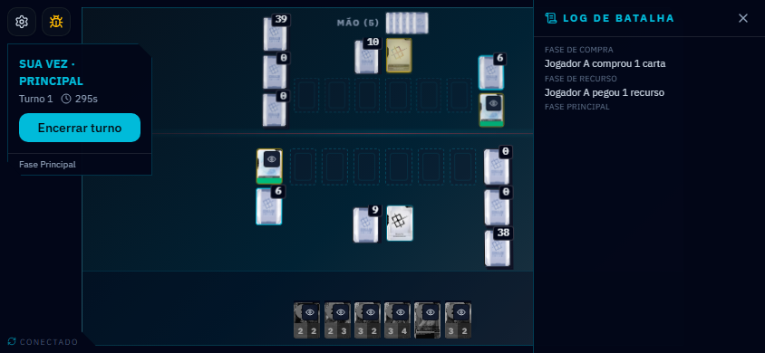